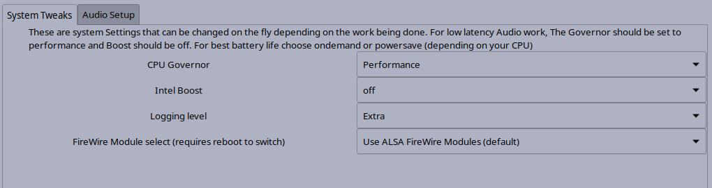

System Tweaks
There are some system tweaks that give better audio performance. As a general suggestion,
it is recomended that the user install a low latency Linux kernel.
The System Tweaks tab looks like:

It has four controls:
-
CPU Governor: The performance setting runs the CPU at it highest rated speed and gives the
best audio performance. However, it may use more power and so it may be worthwhile switching
to Powersave or Ondemand when not doing audio work. It has been noticed that
audio glitches sometimes happen when the CPU changes speed, in particular when the CPU switches
to a lower speed.
- Intel Boost: While it would seem like a great idea to be able to run a little faster when the CPU
is able, the same problem arises when the CPU switches back down to the rated speed, the audio may
glitch. Turning Intel Boost off while doing audio work gives the best audio stability.
-
Logging level: Studio Controls has a background process called Autojack that runs from session start
to session end. It is the real workhorse in Studio Controls, the GUI is just a front end for this
process. Autojack has a logging facility and the logging level determines how much autojack writes
to it's log file. If sending a bug report about Studio Controls, attaching a logfile with the logging
level set to Extra may be helpful for debugging purposes. The log file may be found at:
~/.log/autojack.log
-
FireWire Module select: Chooses the kernel modules to use for FireWire devices. There are the FFADO
modules and the newer ALSA Firewire modules (the ALSA firewire modules are based on the FFADO modules).
The ALSA modules are easier to use and only work with JACK's ALSA back end. However, there are some
Firewire devices that do not have working ALSA modules and work better with the FFADO modules. The FFADO
modules also give sample accurate MIDI input and output. Once a change has been made to this setting,
A reboot is required to make the new setting available to JACK.
Previous: Real Time Permissions
--- Introduction ---
Next: Audio Setup - Jack Master Settings
Studio Controls Home